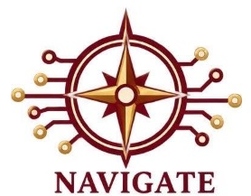
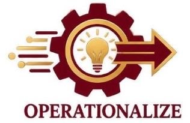

The Medical Colleges of Northern Philippines (MCNP) and the International School of Asia and the Pacific (ISAP) brought statistics beyond the classroom through a month-long celebration that combined training, creative application, competition, and inter-school engagement as part of the 37th Statistics Month Celebration.
Led by the Research and Development Center (RDC), the series of activities engaged all 17 academic departments of MCNP–ISAP and culminated in participation in provincial-level competitions involving 17 schools across Cagayan. The initiative aimed to strengthen students’ statistical competencies, deepen their appreciation of data, and provide practical opportunities to apply analytical and interpretive skills.
The celebration opened on September 15 with a Webinar on Infographics and Data Interpretation conducted via Zoom in collaboration with the College of Information Technology and Engineering. Students enrolled in statistics classes participated in the session, which served as preparation for the development of infographics from September 19 to 22. The activity emphasized how data can be transformed into clear, meaningful, and visually engaging information.
On September 21, students from different academic programs competed in the Institutional Quiz Bee at Amphitheatre 4. For ISAP, Fritz Geosh M. Apilado of BS Information Technology emerged as Champion, followed by Jaymart M. Gammad of BS Computer Engineering as 1st Runner-Up and Rhealyn B. Bitagon of BS Tourism Management as 2nd Runner-Up. For MCNP, Anjanet D. Tabunan of BS Nursing claimed the championship, while Marc Rodney G. San Pedro of BS Medical Laboratory Science and Chloe Rhayne M. Santos of BS Radiologic Technology placed first and second runners-up, respectively.
The celebration continued on September 23 with the Poster-Making Contest at Amphitheatre 3, where students demonstrated their ability to communicate statistical concepts through creative visual expression. Rhed Dalangin of BS Radiologic Technology won first place for MCNP, followed by Jireh Jaf Villanueva of BS Nursing and Ma. Jesusa Batacan of BS Pharmacy. For ISAP, Vince Ryan O. Obispado of BS Customs Administration took first place, with Mitz Invierno of BS Accountancy and Lyca Jeanne O. Paycao of BS Information Technology completing the top three.
Students were further challenged to interpret and communicate information during the Data Interpretation Using Infographics activity held on September 25 at the Instructional Media Center. Levi Mae Afali of BS Nursing emerged as Champion, while Mark Anthony Balbutin of BSSW and Cadiente Rolando of BSAC were named 1st and 2nd runners-up, respectively.
The institutional winners later represented MCNP–ISAP in the Provincial Quiz Bee and Poster-Making activities held on October 5 at Pulsar Hotel in Buntun, Tuguegarao City. The event brought together participants from 17 schools in Cagayan and provided students with a wider venue to test their competencies and engage with peers from other institutions. The MCNP–ISAP participants were coached by institutional statisticians Ms. Tshaine Anne Labang and Ms. Mary Jane Agabin.
Beyond competition, the Statistics Month celebration underscored the importance of statistical literacy in research, academic work, professional practice, and evidence-based decision-making. By combining lectures, infographic development, data interpretation, and competitive activities, the initiative provided students with experiential learning opportunities that required them to analyze information, communicate findings, and apply statistical knowledge in practical contexts.
The initiative directly supports Sustainable Development Goal 4 – Quality Education by strengthening students’ analytical and data literacy competencies through meaningful learning experiences. It also reflects SDG 17 – Partnerships for the Goals through the institution’s engagement with the Philippine Statistics Authority, while its emphasis on data interpretation, visualization, and applied quantitative thinking relates to SDG 9 – Industry, Innovation and Infrastructure.
The celebration also demonstrates WURI-relevant practices by moving statistical learning from theory to application. Its institution-wide participation, practical learning activities, partnership engagement, measurable reach, and potential for annual implementation make the initiative replicable, scalable, and sustainable.
The celebration likewise aligns with key directions of the RDC’s INNOVATES agenda. It supports INSPIRE Research Culture and Capability by strengthening students’ statistical literacy, analytical thinking, and research-related competencies; NAVIGATE Digital Innovation and Infrastructure through the use of infographics, data visualization, and digital presentation of information; OPERATIONALIZE Research Utilization and Innovation by translating statistical knowledge into practical applications through quiz bees, poster-making, infographic development, and data interpretation; EXPAND Partnerships and Global Research through collaboration with the Philippine Statistics Authority and participation in provincial-level activities involving other schools in Cagayan; and STRENGTHEN Education and Institutional Performance by integrating experiential, competitive, and application-based learning across all 17 academic departments.
Through the 37th Statistics Month Celebration, MCNP–ISAP continues to foster a culture where data are not simply computed, but understood, communicated, and used meaningfully—equipping students with competencies increasingly essential in research, innovation, and informed decision-making.
Institutional Competitions & Awardees
Institutional Quiz Bee
Sep 21 • Amphitheatre 4- 🥇 Champion: Fritz Geosh M. Apilado (BS Information Technology)
- 🥈 1st Runner-Up: Jaymart M. Gammad (BS Computer Engineering)
- 🥉 2nd Runner-Up: Rhealyn B. Bitagon (BS Tourism Management)
- 🥇 Champion: Anjanet D. Tabunan (BS Nursing)
- 🥈 1st Runner-Up: Marc Rodney G. San Pedro (BS Medical Laboratory Science)
- 🥉 2nd Runner-Up: Chloe Rhayne M. Santos (BS Radiologic Technology)
Poster-Making Contest
Sep 23 • Amphitheatre 3- 🥇 1st Place: Rhed Dalangin (BS Radiologic Technology)
- 🥈 2nd Place: Jireh Jaf Villanueva (BS Nursing)
- 🥉 3rd Place: Ma. Jesusa Batacan (BS Pharmacy)
- 🥇 1st Place: Vince Ryan O. Obispado (BS Customs Administration)
- 🥈 2nd Place: Mitz Invierno (BS Accountancy)
- 🥉 3rd Place: Lyca Jeanne O. Paycao (BS Information Technology)
Data Interpretation Using Infographics
Sep 25 • Instructional Media Center- 🥇 Champion: Levi Mae Afali (BS Nursing)
- 🥈 1st Runner-Up: Mark Anthony Balbutin (Bachelor of Science in Social Work - BSSW)
- 🥉 2nd Runner-Up: Cadiente Rolando (BS Accountancy - BSAC)
Student entrants demonstrated outstanding capability in translating complex data indicators into easily interpretable visual narratives.
RDC SDG Alignment
UN Sustainable Development Goals
 SDG 4 (Quality Education): Strengthens students’ analytical and data literacy competencies through meaningful learning experiences.
SDG 4 (Quality Education): Strengthens students’ analytical and data literacy competencies through meaningful learning experiences. SDG 9 (Industry, Innovation & Infrastructure): Promotes applied quantitative thinking, data visualization, and technological innovation.
SDG 9 (Industry, Innovation & Infrastructure): Promotes applied quantitative thinking, data visualization, and technological innovation. SDG 17 (Partnerships for the Goals): Institutional engagement with the Philippine Statistics Authority (PSA) and regional consortium colleges.
SDG 17 (Partnerships for the Goals): Institutional engagement with the Philippine Statistics Authority (PSA) and regional consortium colleges.
WURI Best Practices
Demonstrates WURI-relevant practices by moving statistical learning from theory to direct application. Its institution-wide participation across 17 departments, practical learning activities, partnership engagement, measurable reach, and potential for annual implementation make the initiative replicable, scalable, and sustainable.
RDC Agenda Alignment
Strengthens statistical literacy, analytical thinking, and foundational research competencies.

Employs infographics, data visualization, and modern digital presentation of information.

Translates statistical knowledge into practical applications through quiz bees, poster-making, and data interpretation.
Fosters collaboration with the Philippine Statistics Authority and 17 provincial schools in Cagayan.
Integrates experiential, competitive, and application-based learning across all 17 academic departments.
Official Coverage & Documentation Links
Explore original documentation albums, event announcements, and session materials on Facebook: